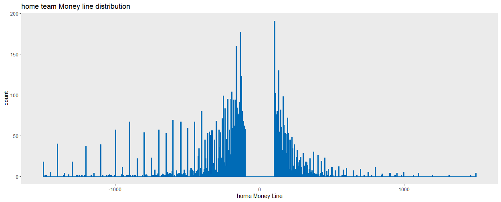
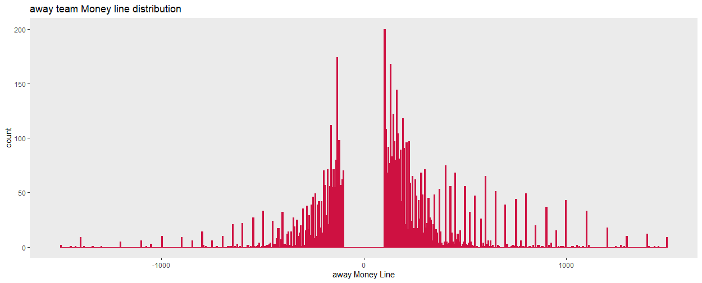
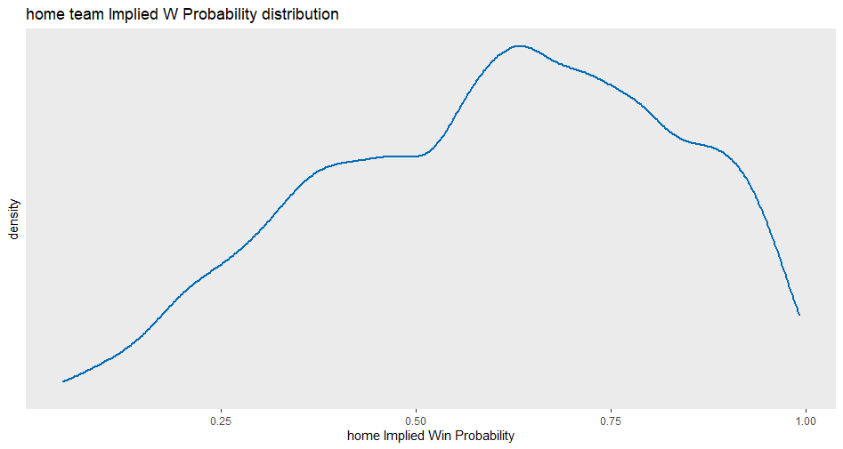
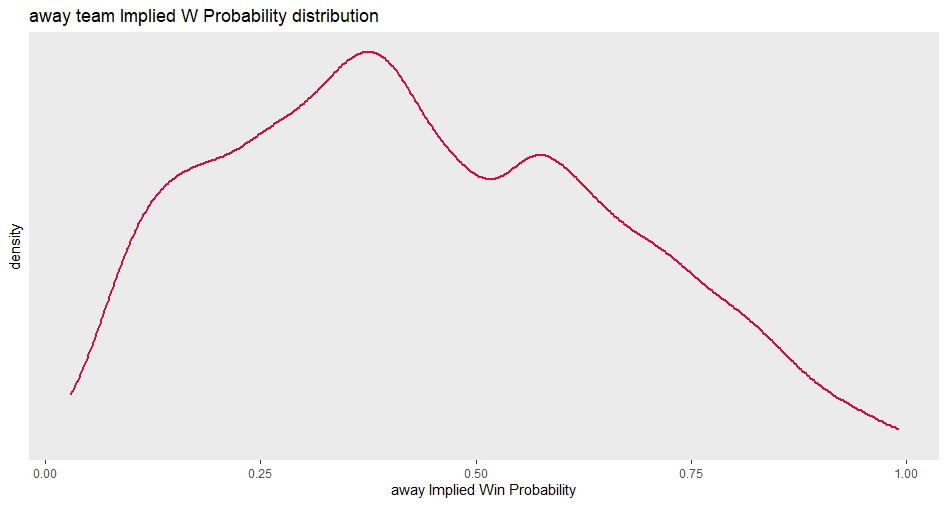
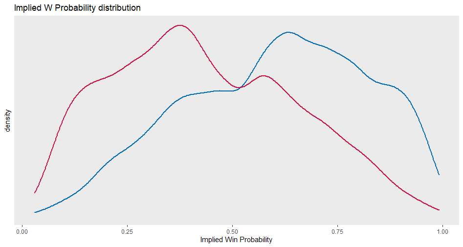
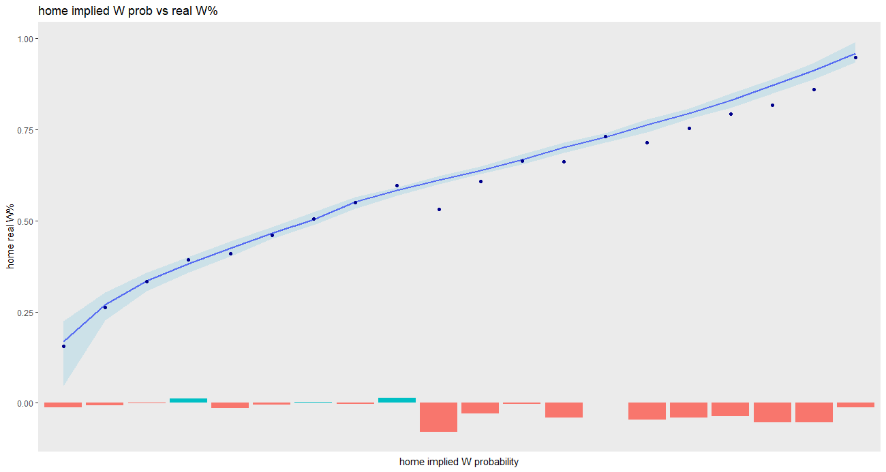
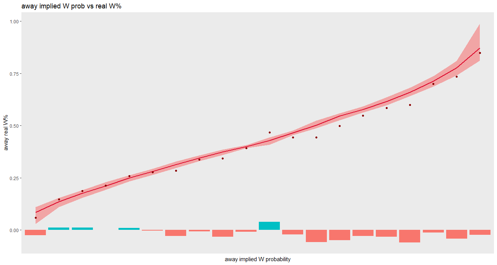
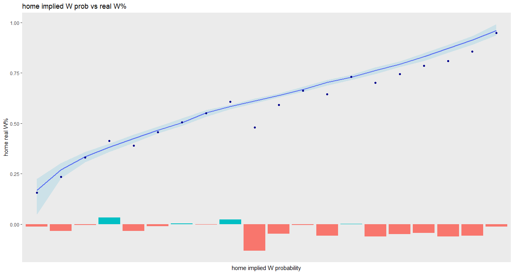
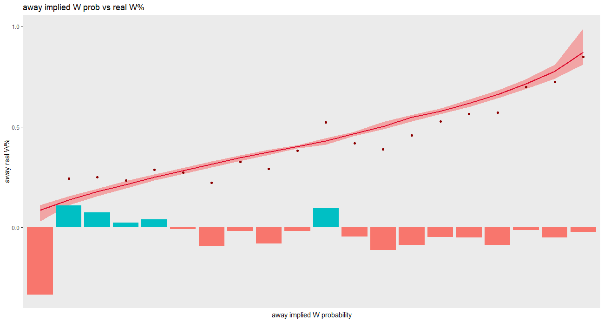

Chapter 4 Betting Strategy
You want to investigate how the betting markets have operated historically. To do this, you need to find and download historical bet data and then add to an allgames_df.
4.1 Getting Historical Data
Downloaded excel files from https://www.sportsbookreviewsonline.com/scoresoddsarchives/nba/nbaoddsarchives.htm
This will clean and merge the bet data into a df called bets_df, still not ready to be merged with allgames
library(readxl)
bets2015 <- read_excel("~\\R\\Basketball\\bets\\excel bet data\\nba odds 2014-15.xlsx")
bets2016 <- read_excel("~\\R\\Basketball\\bets\\excel bet data\\nba odds 2015-16.xlsx")
bets2017 <- read_excel("~\\R\\Basketball\\bets\\excel bet data\\nba odds 2016-17.xlsx")
bets2018 <- read_excel("~\\R\\Basketball\\bets\\excel bet data\\nba odds 2017-18.xlsx")
bets2019 <- read_excel("~\\R\\Basketball\\bets\\excel bet data\\nba odds 2018-19.xlsx")
for (year in years){
tempdf <- get(paste0("bets",year))
tempdf <- tempdf %>% select(Date,VH,Team,Final,ML) %>% slice(1:2460)
tempdf_H <- tempdf %>% filter(row_number() %% 2 == 0) %>% rename_with( ~ paste0("h", .x))
tempdf_A <- tempdf %>% filter(row_number() %% 2 == 1) %>% rename_with( ~ paste0("a", .x))
tempdf <- cbind(tempdf_H,tempdf_A) %>%
mutate(game_outcome = ifelse(hFinal > aFinal,1,0),
season = year) %>%
select(hDate,season, hTeam,aTeam,hFinal,aFinal,hML,aML,game_outcome)
assign(paste0("bets",year,"df"), tempdf)
}
bets_df <- rbind(bets2015df,bets2016df,bets2017df,bets2018df,bets2019df)
rm(tempdf,tempdf_A,tempdf_H,year)
rm(bets2015,bets2016,bets2017,bets2018,bets2019)
rm(bets2015df,bets2016df,bets2017df,bets2018df,bets2019df)Fix some issues (namely that the name format is different) and add some columns to the bets_df
#change the df to do odds instead of money line
bets_df <- bets_df %>% mutate(hIP = ifelse(hML > 0, 100/(hML+100), abs(hML)/(abs(hML)+100)),
aIP = ifelse(aML > 0, 100/(aML+100), abs(aML)/(abs(aML)+100)))
#change the bets_df names to the allgames_df names
#add bets_df team names to the teams_df
teams_df <- teams_df %>% mutate(betsname = sort(unique(bets_df$hTeam)))
#fixing typos in bets_df
bets_df[1894,4] <- "OklahomaCity"
bets_df[1895,4] <- "LAClippers"Create a new_bets_df with better formatting, correct columns
#looping to get the full names of teams and make a new df to be merged with allgames
new_bets <- data.frame()
for (i in 1:nrow(bets_df)){
home <- bets_df$hTeam[i]
away <- bets_df$aTeam[i]
home_team <- teams_df$teams_full[teams_df$betsname == home]
away_team <- teams_df$teams_full[teams_df$betsname == away]
line1 <- data.frame(home_team,away_team)
new_bets <- rbind(new_bets,line1)
}
new_bets_df <- cbind(bets_df[,1:2],new_bets,bets_df[,5:11])
rm(line1,new_bets,away,away_team,home,home_team,i)Correcting the date and season and column names:
#trying to recreate the correct date format
library(lubridate)
new_bets_df <- new_bets_df %>% mutate_at(c('hDate','season'), as.numeric) %>%
mutate(hDate = ifelse(nchar(as.character(hDate))==3,as.numeric(paste0("0",hDate)),as.numeric(hDate)))
new_bets_df <- new_bets_df %>% mutate(year = case_when(season == 2015 ~ ifelse(hDate>999,season-1,season),
season == 2016 ~ ifelse(hDate>999,season-1,season),
season == 2017 ~ ifelse(hDate>999,season-1,season),
season == 2018 ~ ifelse(hDate>999,season-1,season),
season == 2019 ~ ifelse(hDate>999,season-1,season)),
hDate = ifelse(nchar(as.character(hDate))==3,paste0("0",hDate),hDate),
Date = ymd(paste0(year,hDate))) %>%
select(Date,season,3:11) %>%
rename(date = Date,
home_pts = hFinal,
away_pts = aFinal)
new_bets_df$date <- as.character(new_bets_df$date)Now the new_bets_df is ready to be merged with allgames_df:
mergetest <- merge(x = allgames_df, y = new_bets_df, by = c("date","home_team","away_team","home_pts","away_pts","game_outcome","season"), all.x=TRUE)
#did this fully succeed or are there any NAs
sum(is.na(mergetest))
which(is.na(mergetest), arr.ind=TRUE)
#apparently there are and they occurred in the same 3 rows: 182, 3104, 3706
mergetest %>% slice(c(182,3104,3706))
new_bets_df %>% filter(date == "2014-11-21" & home_team == "Toronto Raptors")
new_bets_df %>% filter(date == "2017-01-20" & home_team == "Los Angeles Lakers")
new_bets_df %>% filter(date == "2017-10-19" & home_team == "Toronto Raptors")
#there appears to be a typo in the recording of the away_pts in the new_bets_df, for now I will just manually input the hML,aML,hIP,aIP
mergetest$hML[182] <- -430
mergetest$aML[182] <- 340
mergetest$hIP[182] <- 0.8113208
mergetest$aIP[182] <- 0.2272727
mergetest$hML[3104] <- 150
mergetest$aML[3104] <- -170
mergetest$hIP[3104] <- 0.4
mergetest$aIP[3104] <- 0.6296296
mergetest$hML[3706] <- -1400
mergetest$aML[3706] <- 800
mergetest$hIP[3706] <- 0.9333333
mergetest$aIP[3706] <- 0.1111111
#check again
which(is.na(mergetest), arr.ind=TRUE)
#looks goodWould be nice if this was not called mergetest. Change later.
rm(bets_df,new_bets_df)4.2 Exploratory Analysis
Distributions of moneylines, home and away:
#home ML distribution
ggplot(mergetest) +
geom_histogram(aes(x=hML),bins=500, color='#006BB6',fill='#006BB6') +
xlim(-1500,1500) +
theme(panel.border = element_blank(),
panel.grid.major = element_blank(),
panel.grid.minor = element_blank()) +
labs(x='home Money Line') +
ggtitle('home team Money line distribution')
#away ML distribution
ggplot(mergetest) +
geom_histogram(aes(x=aML),bins=500, color='#CE1141',fill='#CE1141') +
xlim(-1500,1500) +
theme(panel.border = element_blank(),
panel.grid.major = element_blank(),
panel.grid.minor = element_blank()) +
labs(x='away Money Line') +
ggtitle('away team Money line distribution')fig1_path <- "~\\R\\bookdown-demo-main\\bookdown-demo-main\\images\\bets_hML_dist.png"
fig2_path <- "~\\R\\bookdown-demo-main\\bookdown-demo-main\\images\\bets_aML_dist.png"
knitr::include_graphics(c(fig1_path, fig2_path))

Densities of implied probabilities (the ‘fair’ probability given the payout):
#home IP density
ggplot(mergetest) +
geom_density(aes(x=hIP), size=1, color='#006BB6') +
theme(panel.border = element_blank(),
panel.grid.major = element_blank(),
panel.grid.minor = element_blank(),
axis.text.y = element_blank(),
axis.ticks.y = element_blank()) +
labs(x='home Implied Win Probability') +
ggtitle('home team Implied W Probability distribution')
#away IP density
ggplot(mergetest) +
geom_density(aes(x=aIP), size=1, color='#CE1141') +
theme(panel.border = element_blank(),
panel.grid.major = element_blank(),
panel.grid.minor = element_blank(),
axis.text.y = element_blank(),
axis.ticks.y = element_blank()) +
labs(x='away Implied Win Probability') +
ggtitle('away team Implied W Probability distribution')
#bolth
ggplot(mergetest) +
geom_density(aes(x=hIP), size=1, color='#006BB6') +
geom_density(aes(x=aIP), size=1, color='#CE1141') +
theme(panel.border = element_blank(),
panel.grid.major = element_blank(),
panel.grid.minor = element_blank(),
axis.text.y = element_blank(),
axis.ticks.y = element_blank()) +
labs(x='Implied Win Probability') +
ggtitle('Implied W Probability distribution')fig1_path <- "~\\R\\bookdown-demo-main\\bookdown-demo-main\\images\\bets_hIP_density.png"
fig2_path <- "~\\R\\bookdown-demo-main\\bookdown-demo-main\\images\\bets_aIP_density.png"
fig3_path <- "~\\R\\bookdown-demo-main\\bookdown-demo-main\\images\\bets_bothIP_density.png"
knitr::include_graphics(c(fig1_path, fig2_path, fig3_path))


So, which types of bets are the good (better) bets? Taking a look here before ever using w_prob (because the model isn’t done anyway). Here is a plot where each game has been binned (using a cut with a required n per bin) to an IP bin: the line is implied probability in each bin; the dots are what actually happened in each. If the dot is equal to the line, it would mean making that bet is ‘fair’. If the implied probability is .5, say, you would break even if you placed every bet on each gameteam in that bin. If the gameteams in that bin only won 40% of the time, you would be down 20%.
Plots like the elo bin reliability graph, home and away:
#home
#visualizing real w% within implied probability bins
library(Hmisc)
mergetest %>%
mutate(bins_n = cut2(hIP,m=300)) %>%
group_by(bins_n) %>%
summarise(n=n(),
pred_w.pct=mean(hIP),
pred_w.pct_min=min(hIP),
pred_w.pct_max=max(hIP),
real_w.pct=mean(game_outcome==1)) %>%
ggplot() +
geom_line(aes(x=bins_n, y=pred_w.pct), color='blue', size=1, group=1) +
geom_ribbon(aes(x=1:length(bins_n),ymax=pred_w.pct_max,ymin=pred_w.pct_min), fill='lightblue', alpha=.5) +
geom_point(aes(x=bins_n, y=real_w.pct), color='darkblue') +
geom_col(aes(x=bins_n,y=real_w.pct-pred_w.pct,fill=(real_w.pct-pred_w.pct > 0))) +
theme(axis.ticks.x = element_blank(),
axis.text.x = element_blank(),
legend.position = "none",
panel.border = element_blank(),
panel.grid.major = element_blank(),
panel.grid.minor = element_blank()) +
xlab("home implied W probability") + ylab('home real W%') +
ggtitle('home implied W prob vs real W%')
#away
#visualizing real w% within implied probability bins
library(Hmisc)
mergetest %>%
mutate(bins_n = cut2(aIP,m=300)) %>%
group_by(bins_n) %>%
summarise(n=n(),
pred_w.pct=mean(aIP),
pred_w.pct_min=min(aIP),
pred_w.pct_max=max(aIP),
real_w.pct=mean(game_outcome==0)) %>%
ggplot() +
geom_line(aes(x=bins_n, y=pred_w.pct), color='#CE1141', size=1, group=1) +
geom_ribbon(aes(x=1:length(bins_n),ymax=pred_w.pct_max,ymin=pred_w.pct_min), fill='red', alpha=.3) +
geom_point(aes(x=bins_n, y=real_w.pct), color='darkred') +
geom_col(aes(x=bins_n,y=real_w.pct-pred_w.pct,fill=(real_w.pct-pred_w.pct > 0))) +
theme(axis.ticks.x = element_blank(),
axis.text.x = element_blank(),
legend.position = "none",
panel.border = element_blank(),
panel.grid.major = element_blank(),
panel.grid.minor = element_blank()) +
xlab("away implied W probability") + ylab('away real W%') +
ggtitle('away implied W prob vs real W%')fig1_path <- "~\\R\\bookdown-demo-main\\bookdown-demo-main\\images\\bets_realvhIP_w.png"
fig2_path <- "~\\R\\bookdown-demo-main\\bookdown-demo-main\\images\\bets_realvaIP_w.png"
knitr::include_graphics(c(fig1_path, fig2_path))

In both cases, it really looks like the favorites are bad bets. In the case of hIP, it’s around .6, aIP is around .45. What would the payouts be (in each bin) if you placed a bet on every gameteam in the bin.
#home
mergetest %>%
mutate(hPay = case_when(game_outcome == 1 ~ ifelse(hML < 0,(100/abs(hML)),hML/100),
game_outcome == 0 ~ -1),
aPay = case_when(game_outcome == 1 ~ -1,
game_outcome == 0 ~ ifelse(aML < 0,100/abs(aML),aML/100))) %>%
mutate(bins_n = cut2(hIP,m=300)) %>%
group_by(bins_n) %>%
summarise(n=n(),
pred_w.pct=mean(hIP),
pred_w.pct_min=min(hIP),
pred_w.pct_max=max(hIP),
real_w.pct=mean(game_outcome==1),
payout = mean(hPay)) %>%
ggplot() +
geom_line(aes(x=bins_n, y=pred_w.pct), color='blue', size=1, group=1) +
geom_ribbon(aes(x=1:length(bins_n),ymax=pred_w.pct_max,ymin=pred_w.pct_min), fill='lightblue', alpha=.5) +
geom_point(aes(x=bins_n, y=pred_w.pct + payout), color='darkblue') +
geom_col(aes(x=bins_n,y=payout,fill=(payout > 0))) +
#geom_vline(xintercept = 10, linetype='dotted') +
theme(axis.ticks.x = element_blank(),
axis.text.x = element_blank(),
panel.border = element_blank(),
panel.grid.major = element_blank(),
panel.grid.minor = element_blank(),
legend.position = "none") +
xlab("home implied W probability") + ylab('home real W%') +
ggtitle('home implied W prob vs real W%')
#away
mergetest %>%
mutate(hPay = case_when(game_outcome == 1 ~ ifelse(hML < 0,(100/abs(hML)),hML/100),
game_outcome == 0 ~ -1),
aPay = case_when(game_outcome == 1 ~ -1,
game_outcome == 0 ~ ifelse(aML < 0,100/abs(aML),aML/100))) %>%
mutate(bins_n = cut2(aIP,m=300)) %>%
group_by(bins_n) %>%
summarise(n=n(),
pred_w.pct=mean(aIP),
pred_w.pct_min=min(aIP),
pred_w.pct_max=max(aIP),
real_w.pct=mean(game_outcome==0),
payout = mean(aPay)) %>%
ggplot() +
geom_line(aes(x=bins_n, y=pred_w.pct), color='#CE1141', size=1, group=1) +
geom_ribbon(aes(x=1:length(bins_n),ymax=pred_w.pct_max,ymin=pred_w.pct_min), fill='red', alpha=.3) +
geom_point(aes(x=bins_n, y=pred_w.pct + payout), color='darkred') +
geom_col(aes(x=bins_n,y=payout,fill=(payout > 0))) +
#geom_vline(xintercept=11, linetype='dotted') +
#geom_text(aes(x=11,y = .9,label='.45')) +
theme(axis.ticks.x = element_blank(),
axis.text.x = element_blank(),
panel.border = element_blank(),
panel.grid.major = element_blank(),
panel.grid.minor = element_blank(),
legend.position = "none") +
xlab("away implied W probability") + ylab('away real W%') +
ggtitle('away implied W prob vs real W%')fig1_path <- "~\\R\\bookdown-demo-main\\bookdown-demo-main\\images\\bets_realvhIP_pay.png"
fig2_path <- "~\\R\\bookdown-demo-main\\bookdown-demo-main\\images\\bets_realvaIP_pay.png"
knitr::include_graphics(c(fig1_path, fig2_path))
